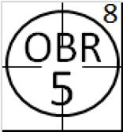
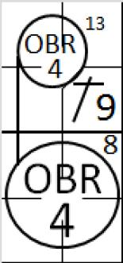
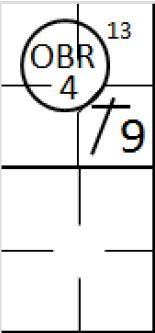

Exemple 20 :
Avec les bases pleines, le batteur frappe une balle en hauteur en direction du défenseur de l’arr
êt-court, et l’arbitre annonce ‘Infield Fly’. La balle est rattrapée de voler par le défenseur de l’arrêt-court.
Exemple 20 :
Avec les bases pleines, le batteur frappe une balle en hauteur en direction du défenseur de l’arr
êt-court, et l’arbitre annonce ‘Infield Fly’. La balle est rattrapée de voler par le défenseur de l’arrêt-court.
Retrait sur ‘ Infield fly ’.
Un ‘ Infield fly ’, suivant la définition des termes des règles officielles du baseball, ‘ C’est un ‘ fly ’ (chandelle) en territoire des bonnes balles (à l’exception d’un line drive ou d’un amorti) qui peut être attrapé par un joueur de champ intérieur avec un effort ordinaire, alors que la première et la seconde base ou la première, la seconde et la troisième base sont occupées, avant qu’il n’y ait deux retraits. Le lanceur, le receveur et tout joueur de champ extérieur qui se trouve dans le champ intérieur lors de ce jeu est considéré comme un joueur de champ intérieur pour l’application de ce règlement.
Quand il semble apparent qu’une balle fra ppée sera un infield fly , l’arbitre doit immédiatement crier « infield fly » au bénéfice des coureurs. Si la balle est proche des lignes de jeu, l’arbitre doit crier « infield fly , if fair » ’ .
Quand l’arbitre déclare un ‘ Infield Fly’, le batteur est retiré au moment où l’arbitre fait son appel, sans se préoccuper de savoir si la balle va être rattrapée de voler ou pas.
L’objectif de cette règle est d’éviter de pénaliser l’équipe offensive en empêchant les défenseurs qui, en laisser intentionnellement tomber la balle, réaliser un double jeu sur des coureurs qui serait forcer d’avancer.
Le batteur est retiré au moment où l’arbitre appel un ‘ Infield fly ’, mais la balle est toujours en jeu, les coureurs ne sont donc plus forcés d’avancer, mais ils peuvent le faire à leur risque.
Comme on a pu le voir dans la chapitres des retraits automatiques, quand la défense ne rattrape pas la balle de voler. Le scoreur officiel utilise la notation ‘OBR’ suivi du numéro de la position défensive qui, en fonction de l’opinion du scoreur, aurait dû attraper de voler la balle, et le chiffre 8 de la règle en dehors du cercle signifiant le retrait.
Quand, d’un autre côté, la défense rattrape la balle de voler, on utiliser l’abréviation ‘IF’ suivit du numéro du défenseur qui a attrapé la balle de voler, sans noter le numéro de la règle puisque ce n’est pas retrait par les règles ‘OBR’. L’abréviation ‘IF’ ‘est utilisée à la place de ‘F’ qui indiquer que l’arbitre à appeler un ‘ Infield Fly’ ou ‘ Infield fly if fair ’ quand la balle était encore dans les airs.
En référence à un ‘ Infield fly ’, il convient de noter les cas intéressants ci-dessous.
Si un coureur touche sa base quand il est touché par un ‘ infield fly ’, il n’est pas retiré bien que le batteur le soit.
Si un coureur est touché par un ‘ infield fly ’ alors qu’il ne touche pas sa base, le coureur et le batteur sont tous deux retirés et la balle est morte.
Si un ‘ infield fly ’ annoncé tombe au sol sans avoir été touché et rebondit en territoire des fausses et revient dans le territoire des bonnes balles avant la limite de la première base ou de la troisième base, c’est un ‘ Infield fly ’.
Les exemples suivants décrivent comment le scoreur doit noter une action de type ‘ infield fly ’ en fonction que la balle est rattrapée ou tombe au sol.
Exemple 20 :
Avec les bases pleines, le batteur frappe une balle en hauteur en direction du défenseur de l’arr
êt-court, et l’arbitre annonce ‘Infield Fly’. La balle est rattrapée de voler par le défenseur de l’arrêt-court.
 Exemple 21 : Avec les bases pleines et un retrait, le batteur frapper une balle en hauteur en direction du défenseur de la troisième base., et l’arbitre annonce ‘Infield fly if fair’. Quand la balle tombre, elle touche le coureur qui est sur la troisième base.
Le batteur est déclaré retiré sur un retrait automatique numero huit, et le retrait est porté au crédit du défenseur de la troisième base. Le coureur qui a été touché par la balle n’est pas retiré, et reste sur la troisième base.
 Exemple 22 :
Avec la première et deuxième base occupée, le batteur frappe une balle en
l’air le long de la ligne entre le marbre et la première base. L’arbitre annonce un ‘Infield fly if fair’. Le défenseur se place sous la balle mais ne réussit pas à la rattraper.
Exemple 22 :
Avec la première et deuxième base occupée, le batteur frappe une balle en
l’air le long de la ligne entre le marbre et la première base. L’arbitre annonce un ‘Infield fly if fair’. Le défenseur se place sous la balle mais ne réussit pas à la rattraper.
Le coureur sur la deuxième, voyant l’erreur qui a été commise, tente de rejoindre la troisème base, mais le défenseur de la première base récupère la balle pour la relayé au défenseur de troisième base à temps pour retirer le coureur. Le batteur est retiré sur un retrait automatique numéro 8 [9.09(c)(1)] , tandis que le coureur est retiré pour avoir été touché.
Aucune erreur n’est attribué au défenseur de la première base puisque cela n’a pas eu de conséquence négative. On score donc un retrait par ‘un infield fly’ pour la btteur, une assistance pour le défenseur de la première base, et un retrait pour défenseur de la première base et pour le défenseur de la deuxième base.
Ce n’est pas un double jeu, puisque la continuité de l’action entre les deux retraits a été interrompue par l’erreur commise par le défenseur de la première base. Ceci doit être expliqué dans la zone note de la feuille de scorage.
 Exemple 23 :
Avec la première et la deuxième base occupée et un retrait, le batteur frappe une balle en l’air le long de la ligne entre la première base et le marbre, et donc l’arbitre appel un ‘Infield fly if fait’.
La balle tombe dans la zone des fausses balles mais rebondit et reviens dans la zone des bonnes avant d’être touchée par un défenseur. On note un retrait pour ‘Infield fly’ contre le batteur et on crédite un retrait pour le défenseur qui était le proche de la balle. (Dans ce cas, le défenseur de la première base).
Exemple 23 :
Avec la première et la deuxième base occupée et un retrait, le batteur frappe une balle en l’air le long de la ligne entre la première base et le marbre, et donc l’arbitre appel un ‘Infield fly if fait’.
La balle tombe dans la zone des fausses balles mais rebondit et reviens dans la zone des bonnes avant d’être touchée par un défenseur. On note un retrait pour ‘Infield fly’ contre le batteur et on crédite un retrait pour le défenseur qui était le proche de la balle. (Dans ce cas, le défenseur de la première base).
 ‘ Si une interférence est appelée durant un ‘ Infield fly ’, la balle reste en jeu tant que l’on n’a pas déterminer si la balle est dans la zone des bonnes balles ou des fausses balles ’. Exemple 24 : Si dans la zone des bonnes balles, le coureur qui a fait une interférence et le batteur sont retirés [Définition des termes des règles officielles du baseball].

Exemple 25 : Si dans la zone des fausse balles, le coureur est retiré et le batteur retourne à la frappe .
Exemple 26 : Avec la première et la seconde base occupée et un retrait, La frappeur frappe une balle le long de ligne entre la troisième base et le marbre et l’arbitre appel un ‘Infield fly if fair’. La balle touche terre dans le térritoire des bonnes balles et rebondit dans celui des fausses balles avant qu’un défenseur ne la touche. On considère que c’est une fausse balle, et en conséquence, le batteur n’est pas retiré, et il est crédité d’un nouveau ‘Strike’ (sauf il en a déjà deux à son compte) et retourne au bâton.
Une erreur doit être crédité au défenseur qui était dans la meilleur position pour attraper la balle.
NOTE : Comme l’OBR 8 est un retrait automatique, même s’il doit suivre par la règle 5.09(a) (12) des règles officielles du baseball, il est appliqué quand toutes les conditions décrites la règle et les notes sont vrai,
Moins de deux retraits.
Coureurs sur la première base, première et seconde base, première et troisième base ou base pleines.
Le batteur frappe une ‘line drive’ ou une balle en l’air.
Le frappeur laisse tomber la balle après l’avoir touchée.
L’arbitre, jugeant que l’action du défenseur était délibérée, déclare le batteur retiré.
ATTENTION : Si la règle est appliquée, la balle est morte, exceptée dans le cas d’un ‘Infield fly’.